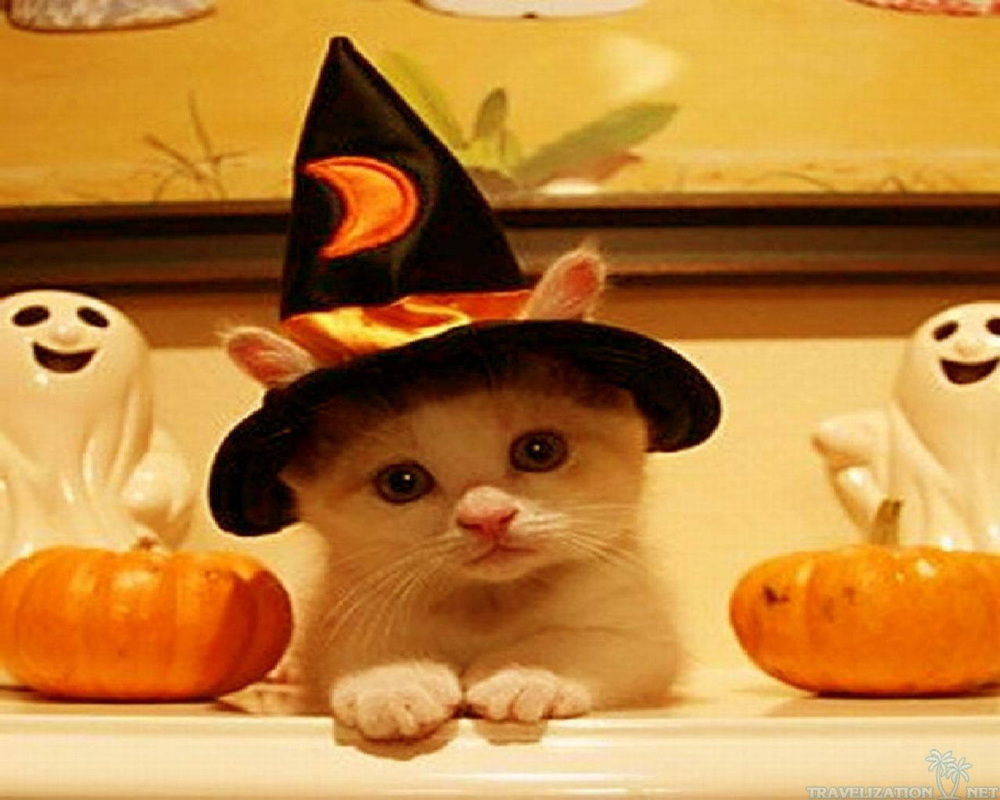

Halloween History For You To Sound Smart At The Comming Party!
Source From History Channel
Halloween's origins date back to the ancient Celtic festival of Samhain (pronounced sow-in). The Celts, who lived
2,000 years ago, mostly in the area that is now Ireland, the United Kingdom and northern France, celebrated their
new year on November 1.
This day marked the end of summer and the harvest and the beginning of the dark, cold winter, a time of year that was
often associated with human death. Celts believed that on the night before the new year, the boundary between the
worlds of the living and the dead became blurred. On the night of October 31 they celebrated Samhain, when it was
believed that the ghosts of the dead returned to earth.
In addition to causing trouble and damaging crops, Celts thought that the presence of the otherworldly spirits made
it easier for the Druids, or Celtic priests, to make predictions about the future. For a people entirely dependent on
the volatile natural world, these prophecies were an important source of comfort during the long, dark winter.
To commemorate the event, Druids built huge sacred bonfires, where the people gathered to burn crops and animals as
sacrifices to the Celtic deities. During the celebration, the Celts wore costumes, typically consisting of animal
heads and skins, and attempted to tell each other'ss fortunes.
When the celebration was over, they re-lit their hearth fires, which they had extinguished earlier that evening, from
the sacred bonfire to help protect them during the coming winter.
10 Interesting Facts About Halloween
Halloween happens every evening of the 31st of October. It marks the start of Allhallowtide, a series of
Christian holidays meant to remember the dead such as loved ones, saints, and martyrs.
Current Halloween customs can be traced to the pagan traditions of ancient Celtics, particularly the
festival called "Samhain" which means summer's end. It is part of their preparation for
the gloomy winter.
Celtics believed that the boundary with the Otherworld is weaker during Samhain, allowing spirits
to pass through and walk among us. People left food offerings outside their homes to appease the
spirits.
By the 1500s, the festival began to include costumes and house-to-house visits. Young people
impersonated the spirits, recited verses, and sang songs in exchange for food. Households obliged
to receive good fortune
Most celebrations of saints and martyrs were held from spring to summer. In 837, Pope Gregory
IV moved All Saints Day to November 1 which coincides with Samhain. This was a practical
decision to decongest Rome from pilgrims during summers.
In the Middle Ages, Christians would carry carved out turnips turned into lanterns while
going around homes for traditional souling. These lanterns are thought to symbolize
the souls of the dead.

Pets are part of the family so they can'st be left behind. In 2018, Americans collectively
spent roughly $480 million on Halloween costumes for their pets. It is a massive increase
from the $200 million estimate back in 2010.
The first Halloween-themed attraction opened in 1915 in England.
It was called the Orton and Spooner Ghost House, a steam-powered carnival fun house. It continues
to be displayed as part of the Hollycombe Steam Collection.
The three most popular treats given away by households include chocolate bars, chocolate candies,
and chewy candies. Many will also hand out gums, corn candies, and salty snacks. Lucky children
may even get toys.
Halloween sales indicate the health of the retail sector heading into the holidays. Although Black
Friday official kicks off Christmas shopping season, about 39% of shopper actually start before
November.